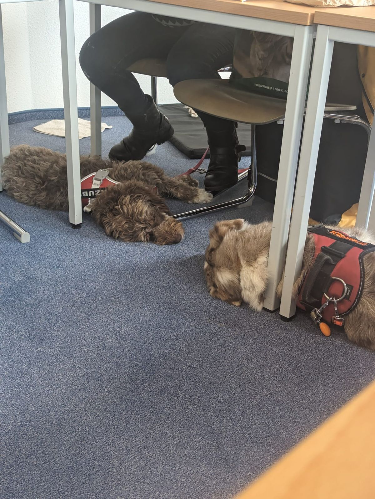
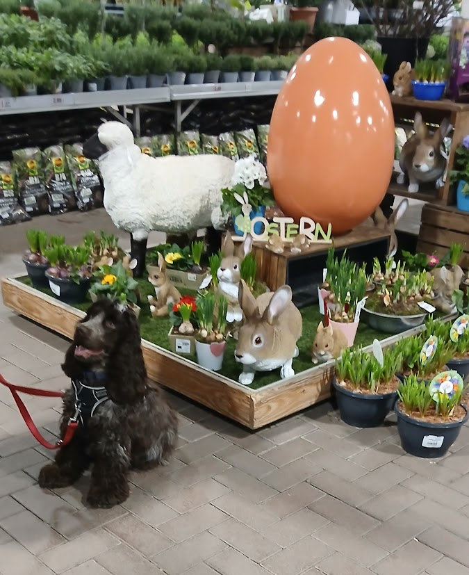
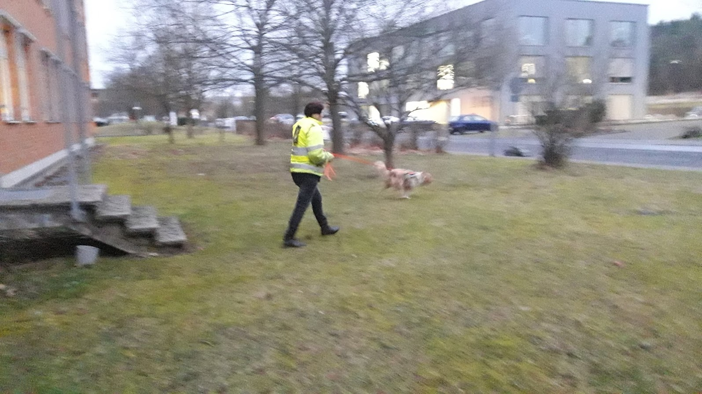
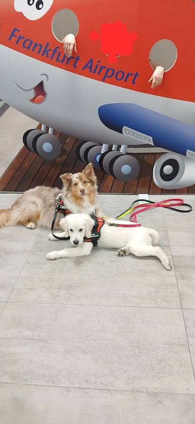

Wir bieten verschiedene Workshops und Spezial-Trainings an. Die Platzanzahl für unsere Trainingseinheiten und Workshops ist begrenzt.
Intensiv-Workshop
Nächste Termine im Ebsdorfergrund
Theorie- und Praxisseminare:
- Theorie und Praxis Teil 3: für September/Oktober 2026 geplant
- Theorie und Praxis Teil 2: für Juni/Juli 2027 geplant
- Theorie und Praxis Teil 1: für März/April 2027 geplant
Samstag und Sonntag in Präsenz
Anmeldung erforderlich!

Feste und Messen und Veranstaltungen
je nach Jahreszeit geplant - nähere Infos folgen!
Anmeldung erforderlich!

Mantrailing-Wochenende
Wo?
Ebsdorfergrund und Umgebung
Für wen?
Für Anfänger oder Fortgeschrittene
Ab März 2026
Weitere Informationen folgen in Kürze!

Training am Flughafen
März und November 2026 geplant
Anmeldung erforderlich

Training im Zoo und Tierparks
Weitere Informationen folgen in Kürze!
nächster Termin am 13.09.25 Anmeldung erforderlich
geplant Opelzoo, Tierpark Lich, Lochmühle und andere

Training auf dem Weihnachtsmarkt, Messen, und viele andere Besonderheiten
Es stehen die Weihnachtsmärkte
- Marburg
- Mainz
- Giessen
- Hachborn
- Kirchhain
- Büdingen
- Bad Vilbel
und viele andere auf den Plan
gerne Anmelden
2 Bilder · Zum Vergrößern ein Bild auswählen.


Bitte besuchen Sie diese Seite bald wieder. Vielen Dank für Ihr Interesse!